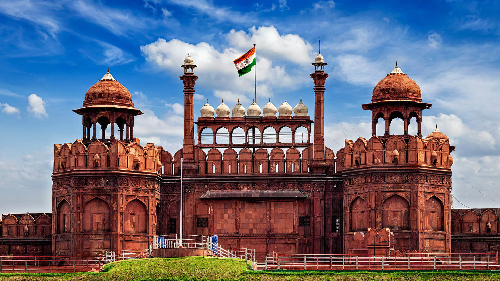

Delhi, the capital city of India, is a vibrant blend of history, culture, and modernity. Known as the heart of the nation, it is divided into two parts: Old Delhi, which carries the charm of the Mughal era with its narrow lanes, bustling bazaars, and historic monuments, and New Delhi, which was planned during the British rule and is home to wide roads, government buildings, and embassies. The city has witnessed centuries of dynasties, from the Delhi Sultanate to the Mughals, leaving behind architectural marvels like the Red Fort, Qutub Minar, Humayun’s Tomb, and Jama Masjid.
Delhi is also a cultural hub, offering a glimpse of India’s diversity. Festivals like Diwali, Holi, Eid, and Christmas are celebrated with equal enthusiasm, reflecting the city’s inclusiveness. Food is another highlight of Delhi’s identity – from spicy street foods like chaat, parathas, and kebabs in Chandni Chowk to fine dining experiences in Connaught Place and South Delhi. The city also thrives with modern shopping malls, art galleries, theaters, and nightlife, making it a mix of tradition and contemporary lifestyles.
Beyond its historic and cultural significance, Delhi serves as a center of politics, education, and business. Being the seat of the Indian government, it houses the Parliament, Rashtrapati Bhavan, and the Supreme Court. The city is also home to prestigious institutions like Delhi University, JNU, and AIIMS, attracting students from across the nation. While Delhi is bustling and dynamic, it also faces challenges such as traffic congestion and air pollution. Yet, with its rich heritage, cosmopolitan lifestyle, and role as the nation’s capital, Delhi remains one of the most influential and fascinating cities in India.
